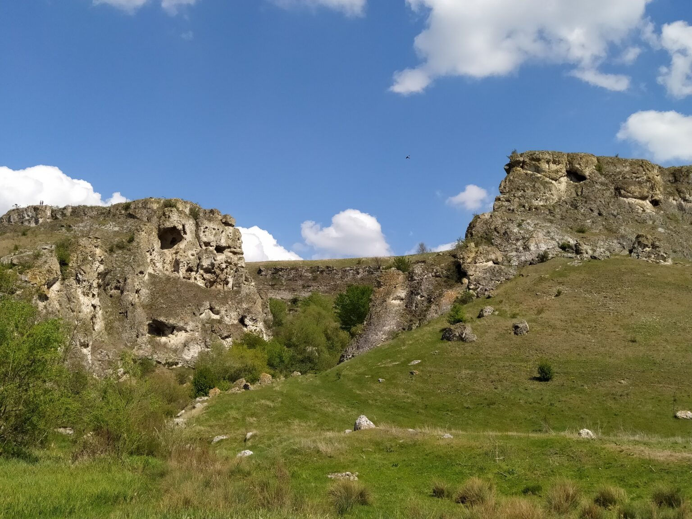
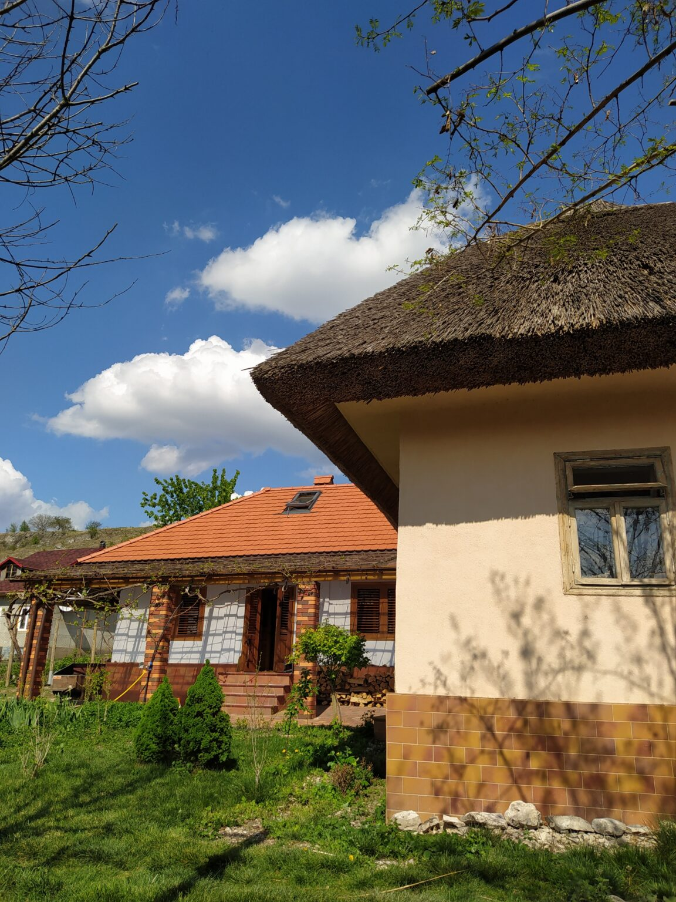

Duruitoarea Veche și defileul Duruitoarea
Nu departe de orăşelul Costeşti, la est de satul cu acelaşi nume, curge râul Duruitoarea, un afluent al râului Ciugur, care a săpat în toltre un defileu adânc. Pantele sale calcaroase abrupte sunt marcate de grote, înfrumuseţate cu stânci care au cele mai neobişnuite forme. Grota Duruitoarea Veche este cunoscută ca o aşezare străveche din epoca de piatră. Ea constă din trei încăperi cu lungimea totală de 49 m, lăţimea de 5-9 m.

Priveliște

Case restaurate